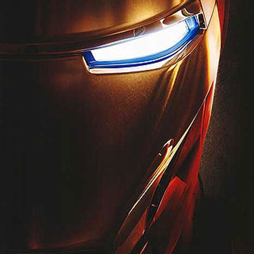

- Sankovich Andrey
- phone: +375(29)564-01-66; email: nevozmojke@gmail.com; telegram @AndreySankovich.
- My goal is to enter "IT" as a Frontend-developer. And develop in this direction. For me, such qualities as
responsibility, honesty are important. I like to solve complex and interesting problems. I like to learn
something new every day.
- HTML, CSS, JavaScript. Also I work whith SCSS, SASS, Gulp.
- Github.
- Unfortunately, I don’t have such an experience yet.
- Self-education (codeacademy, htmlacademy, youtube chanels), RS School.
- Pre-Intermediate (practice in video games, and very seldom on the work).
